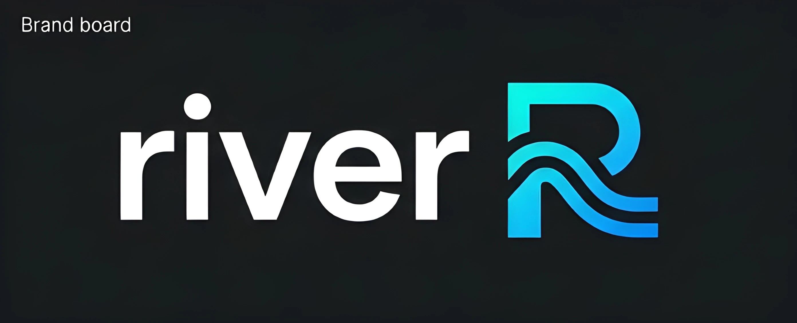
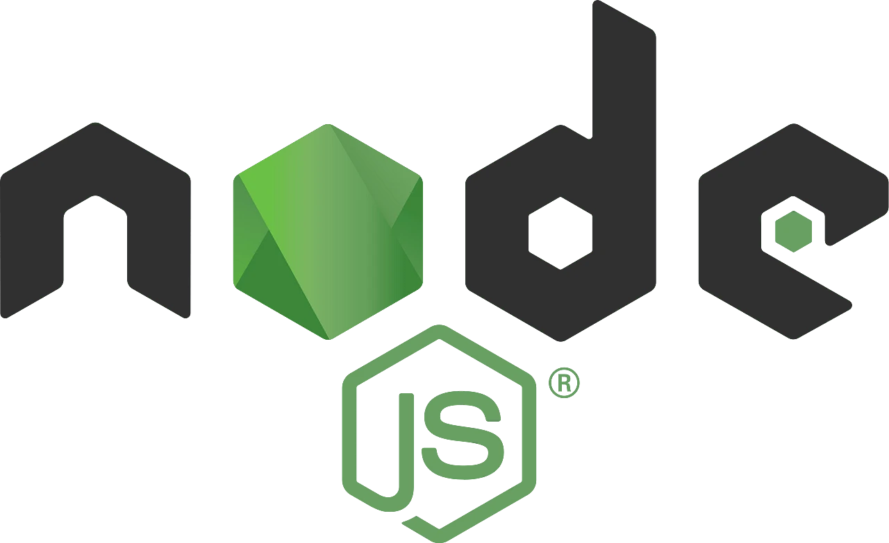

Systems Programming
Rust, Tokio, TCP servers, protocol parsing, concurrency, persistence, and low-level architecture.
RustTokioRESPbincode
Software Engineer building backend systems and products.
I started building software before university, and I still learn the same way: by taking ideas from concept to working software. I work across backend services, storage and real-time systems, and full products — with attention to architecture, reliability, and how things behave beneath the surface.
I started writing software before university, after discovering web development in secondary school. That early start shaped how I learn: build real things, understand the underlying system, then make it better.
I study physics alongside engineering, but I came to software by building it. My work spans backend services, real-time platforms, storage systems, blockchain programs, and full products — from first sketch to working software.
I care about how software behaves beneath the surface — architecture, data flow, failure modes — and about shipping things that are reliable, maintainable, and actually useful.
Languages, databases, and infrastructure I've used to ship backend services, systems, and products.
Rust, Tokio, TCP servers, protocol parsing, concurrency, persistence, and low-level architecture.
Production APIs with authentication, role-based access, queues, caching, docs, and clean REST design.
Relational data models, query design, in-memory storage, Redis-backed workflows, and persistence layers.
Responsive interfaces, full-stack delivery, real-time experiences, and practical products for real users.

Storage internals
A lightweight key-value database inspired by Redis, built to explore networking, concurrency, and storage — with TTL expiration, sharded storage, and disk persistence.
Open case studyEducation platform
A study platform serving past exam questions alongside AI-generated practice — built around a backend that handles questions, users, and study flows.

Production backend API
A school management and CBT backend covering students, exams, results, and timed sessions — with auth and roles, background jobs, caching, and documented APIs.
I think in modules, boundaries, data flow, failure modes, and long-term maintainability.
I care about latency, resource usage, responsive UI, and systems that stay predictable under load.
I build for real workflows, not demos alone: useful defaults, clear APIs, and polished user paths.